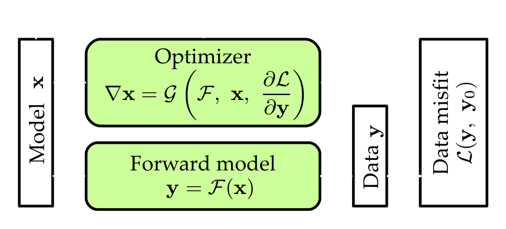
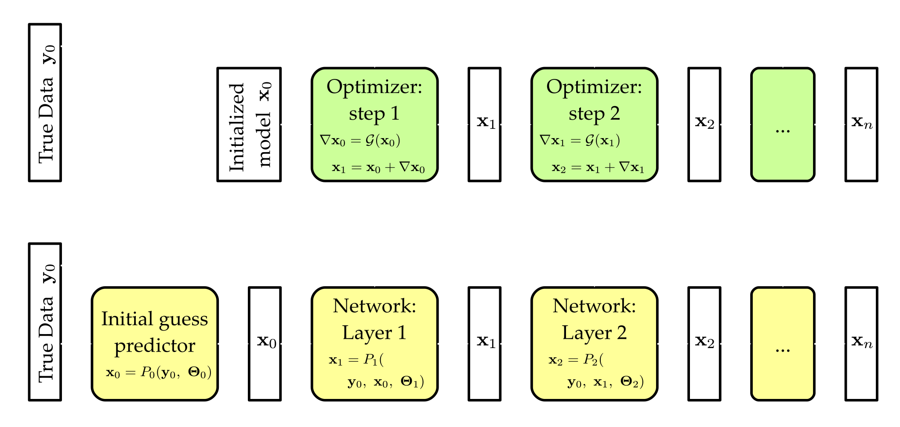
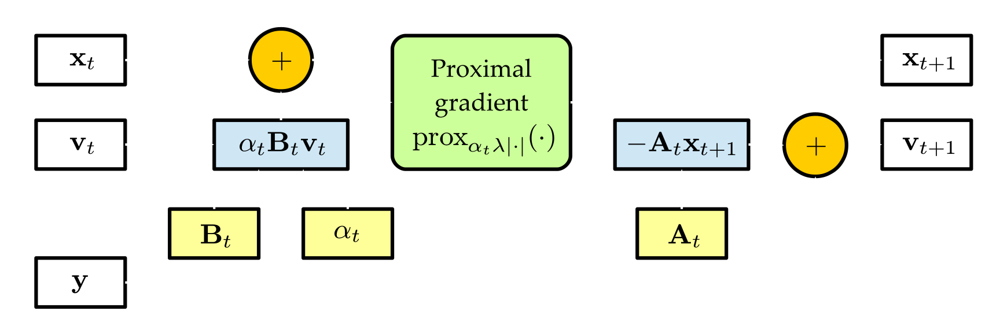
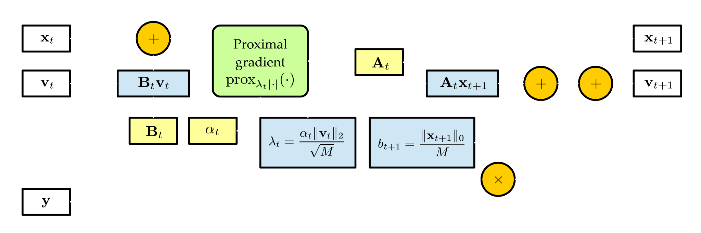
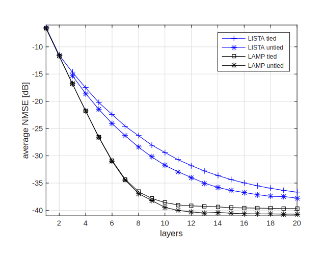

Special Notes on Aug. 13, 2018
| Date: | Aug 13, 2018 |
|---|---|
| Last Updated: | Aug 24, 2018 |
| Categories: | |
| Tags: |

Contents
Introduction
In this note, we would like to discuss about an interesting idea: how to implement the conventional optimization methods in deep-learning architecture? Actually we have introduced this idea in note20180720. Here let us give a brief about this idea.
A brief about inversion
First, we need to learn how the traditional inversion works. This process could be generally described as such a process:
| The workflow of a traditional inversion |
|---|
|  |
Suppose we have a known data $\mathbf{y}_0$, a forward model function $\mathcal{F}$ could transform a model $\mathbf{x}$ into data $\mathbf{y}$. To find the model parameter $\hat{\mathbf{x}}$ that corresponds with $\mathbf{y}_0$, we need to make the inversion. Generally a inversion could be divided into two steps:
Check here to see Jacobian matrix in Wikipedia.
- Forward feeding: giving a model $\mathbf{x}$, feed it into the function $\mathcal{F}$ so that we could get a prediction $\mathbf{y}$.
- Back propagation: giving a misfit function $\mathcal{L}$ (as the loss function), calculate $\left.\frac{\partial \mathcal{L}}{\partial \mathbf{y}}\right|_{\mathbf{y}_0}$. Then we could use this gradient to calculate the back-propagated gradient $\frac{\partial \mathcal{L}}{\partial \mathbf{x}} = \mathbf{J}\frac{\partial \mathcal{L}}{\partial \mathbf{y}}$, where we call $\mathbf{J}(\mathcal{F},~\mathbf{x})$ the Jacobian matrix. The back-propagated gradient would be re-balanced by a specific optimizer, which means the eventual gradient $\nabla \mathbf{x}$ would be defined as a function like $\nabla \mathbf{x} = \mathcal{G} \left(\frac{\partial \mathcal{L}}{\partial \mathbf{x}} \right)$.
The two steps would compose a loop. Every loop could be viewed as an “iteration”. When we begin the inversion, we use a initial guess $\mathbf{x}_0$. At the end of the $t^{\mathbf{th}}$ iteration, we would update the model parameter like $\mathbf{x}_{t} = \mathbf{x}_{t-1} + \alpha_t \nabla \mathbf{x}_{t-1}$, where we call $\alpha_t$ as the learning rate in the $t^{\mathbf{th}}$ iteration. After $n$ iterations, we may get converged model paramters $\hat{\mathbf{x}} \approx \mathbf{x}_n$. The whole process of the inversion could be viewed as:
A deep learning view of inversion
The figure in the above section shows the workflow of the inversion. If we view different iterations as different functions respectively, we may get a view like this:
| Migrate inversion into deep network |
|---|
|  |
Let us concentrate on the upper part of this figure firstly. In every step we accept a model $\mathbf{x}_t$, the ground truth $\mathbf{y}_0$ and the known forward model $\mathcal{F}$ and feed them into optimizer $\mathcal{G}$. Then we could calculate a gradient $\nabla \mathbf{x}_t$ and use it to update $\mathbf{x}_t$. The $t^{\mathbf{th}}$ step of the optimizer function depends on the prediction of the last optimizer $\mathbf{x}_{t-1}$. So this method is deterministic and could not be adjusted by prior experiment, which means the result $\mathbf{x}_n$ only depends on the initial guess $\mathbf{x}_0$. Once the initial guess is given, the prediction would not be changed.
The lower part of the above figure shows the abstract of the idea of “trainable inversion”. If we view $\mathcal{G}(\cdot)$ as a function, it could be replaced by another function $P_t(\cdot,~\boldsymbol{\Theta}_t)$, where $\boldsymbol{\Theta}$ is a collection of trainable parameters. Then we could use an initial guess predictor $P_0$ to give an initial prediction $\mathbf{x}_0$, and feed it into a series of trainable functions $P_t$. Each trainable function could be viewed as a surrogate of one step of the optimization in the primal inversion. In a deep learning view, we call this surrogates as “layers”, thus the whole process of the prediction could be viewed as a deep network.
In the following parts of this note, we would discuss how to design those surrogates, i.e. the trainable network layers. Because the inversion methods are different from each other, and the problems that need to be solved also vary in different cases. To migrate a traditional inversion method into deep network, we need to design the basic structure of the layer according to those varying factors.
Reference and background
Proximal gradient method
In this note, we are talking about the sparse linear inverse problem. To understand this problem, we need to learn the proximal gradient method. Check these slices to get acknowledged with it quickly:
The proximal gradient method is generally used to solve such a problem:
where $f$ is differentiable while $h$ is possibly non-differentiable. At first both $f$ and $h$ need to be convex, while in these years it has been popularized in non-convex problem. For example, here are two articles where both $f$ and $h$ could be non-convex.
Accelerated Proximal Gradient Methods for Nonconvex Programming
Inexact Proximal Gradient Methods for Non-Convex and Non-Smooth Optimization
In sparse linear inverse problem, both $f$ and $h$ are convex. Thus we would suppose this condition is satisfied in the following parts. Maybe in the future I would write another note for the non-convex case which is extremely important in machine learning.
At first, the proximal gradient method is proposed for solve the quadratic approximation. Since $h$ may be non-non-differentiable, the quadratic problem is only related to $f$. We have known that if $f$ could be approximated by first-order gradient, it would has a residual term which is second-order. Thus we could rewrite $\eqref{fml:abstract-proximal}$ as
where we use $\alpha$ to represent learning rate. First we could remove $f(\mathbf{x})$ term. To explain why $\alpha$ appears here, we need to rewrite the above equation as:
Because $\mathbf{x} - \alpha \nabla f(x)$ indicates the plain gradient descent method, $\alpha$ should be the learning rate. Therefore, we define the proximal operator as:
The reason why we do not use $\alpha$ here is because we could use $\alpha h$ to replace $h$. Note that this function has analytic solution in some cases. For example, if we define $h$ as L1 norm, then this problem would be specified as a solution for a sparsely regularized problem:
The corresponding proximal gradient problem is
Check here to see Subderivative in Wikipedia.
To solve it, let its first-order gradient become zero. Since $h$ is non-non-differentiable, we use its subgradient to solve this problem. For the $j^{\mathrm{th}}$ element $z_j$, we know that.
The above equation could be rewritten as
We call this method “soft thresholding”. In practice, we calculate $\mathrm{prox}_{\alpha\lambda|\cdot|}(\mathbf{x} - \alpha \nabla f(\mathbf{x}))$ iteratively to solve $\eqref{fml:l1-proximal}$. As described before, this proximal problem has analytical solution.
Sparse linear inverse problem
Suppose we have a vector $\mathbf{s}$ which could be constructed by a series of sparse orthogonal basis $\boldsymbol{\Psi}$, which means $\mathbf{s} = \boldsymbol{\Psi}\mathbf{x}$. Then defining a linear operator $\boldsymbol{\Phi}$, we could use $\mathbf{s}$ to construct a measurement $\mathbf{y}$, i.e.
where $\mathbf{n}$ is a noise vector. So we could rewrite this forward function if we define $\mathbf{A} = \boldsymbol{\Phi}\boldsymbol{\Psi}$,
If we only know $\mathbf{y}$ and $\mathbf{A}$, to get $\mathbf{x}$, we could solve such a convex problem,
We call it “sparse linear inverse problem”. In the following parts, we would discuss some methods including primal inversions and their learning versions for solving this problem. The articles on which this note inspect are:
Learning Fast Approximations of Sparse Coding
Onsager-corrected deep learning for sparse linear inverse problems
Technical implementation of proximal gradient method in Tensorflow
Proposed methods
ISTA
The iterative soft thresholding algorithm (ISTA) is the simplest solution to problem $\eqref{fml:splinear}$, because it is just the plain solution of the proximal problem. Like what we have done, here we could derive the updating step for ISTA:
In fact, the gradient of $\frac{1}{2} \lVert \mathbf{y} - \mathbf{A}\mathbf{x}_t \rVert^2_2$ is $-\mathbf{A}^T \mathbf{v}_t$. Thus ISTA could be viewed as convex gradient descent method with L1 regularization. Apparently this method does not have a good performance because gradient descent method has a very low convergent rate.
LISTA
The learning ISTA (LISTA) is adapted from the primal ISTA method. Here we suppose $\lambda$ is pre-defined, however $\mathbf{A}$ and $\alpha$ are unknown and trainable. Thus we could rewrite the primal optimization as:
Then we could define a surrogate function $P_t$ which accepts $\{\mathbf{x}_t,~\mathbf{v}_t,~\mathbf{y}\}$ as the input parameters, outputs $\{\mathbf{x}_{t+1},~\mathbf{v}_{t+1}\}$. The trainable parameters include $\{\mathbf{A}_t,~\mathbf{B}_t,~\alpha_t\}$. Thus we know that $P_t$ is a surrogate for one step in ISTA, and it could also be viewed as a layer in deep network. The basic unit (i.e. one layer) of LISTA could be figured as
| The layer structure of LISTA |
|---|
|  |
To be specific, we need to define $\mathbf{x}_0$ and $\mathbf{v}_0$. LeCun suggests that we could use $\mathbf{v}_0 = \mathbf{y}$ and $\mathbf{x}_0 = \mathrm{prox}_{\alpha_t\lambda|\cdot|}( \alpha_t \mathbf{B}_0 \mathbf{y} )$. However, other predictions could be capable, too.
AMP
Quantiles analysis shows that in the first iterations, ISTA has a heavy tailed input error, which makes it converges slowly especially in the first iterations. To solve this problem, an improvement, i.e. the approximate message passing (AMP) algorithm is proposed. AMP makes use of onsager corrections and its denoising threshold for proximal operator is prescribed. This method could be formulated as follows
The $b_t \mathbf{v}_{t-1}$ term which is like a momentum technique is what we call “onsager correction”. We define $\mathbf{v}_{-1}=\mathbf{0}$. The algorithm accepts an initial guess for $\mathbf{x}_0$ then $\mathbf{x}$ could be optimized by several iterations. In particular, $M^{-1}$ is the entries of variance of the large i.i.d. (sub)Gaussian random matrix $\mathbf{A}$. In practice, $M$ could be pre-computed.
LAMP
LAMP follows the same structure like what we have introduced in LISTA. The surrogate function $P_t$ also accepts $\{\mathbf{x}_t,~\mathbf{v}_t,~\mathbf{y}\}$ as the input parameters, and outputs $\{\mathbf{x}_{t+1},~\mathbf{v}_{t+1}\}$. The trainable parameters include $\{\mathbf{A}_t,~\mathbf{B}_t,~\alpha_t\}$. The LAMP could be formulated as
It is interesting that we do not need to define a $\mathbf{v}_{-1}$ here, because $\mathbf{v}$ is calculated later than $\mathbf{x}$. The only thing we need to do is providing the initial guess for $\mathbf{x}_0$ and its corresponding $\mathbf{v}_0$, as what we have done in LISTA. We suggest that the initial guess could be predicted by another deep network.
In the following figure we show the basic unit of the LAMP structure.
| The layer structure of LAMP |
|---|
|  |
Results
At the beginning of the article, the author compares the performances of ISTA, FISTA (Faster ISTA) and AMP. The results are shown in this figure:
| Comparison of primal inversions |
|---|
 |
We could learn that the primal ISTA requires more than $3 \times 10^{3}$ steps to converge. While AMP only needs about 30 steps. Analytically AMP is a more advanced method.
However, if we introduce the network structure, both the LISTA and LAMP could converge in 20 layers. Which means the learning structure requires fewer “steps” when it comes to the convergence. Feeding the i.i.d. Gaussian basis $\mathbf{A}$, the LAMP could reach a lower loss value in fewer steps.
| Comparison of learning optimizations |
|---|
|  |